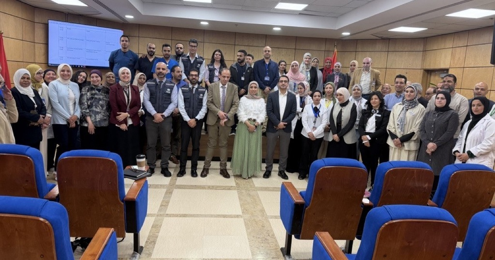
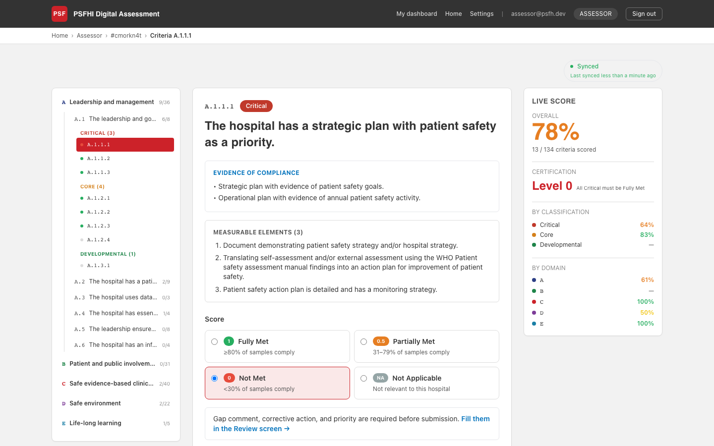
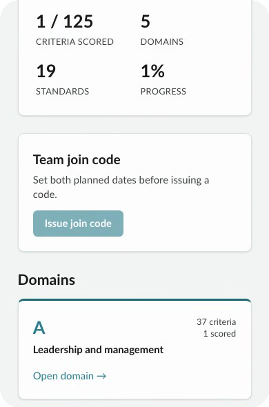
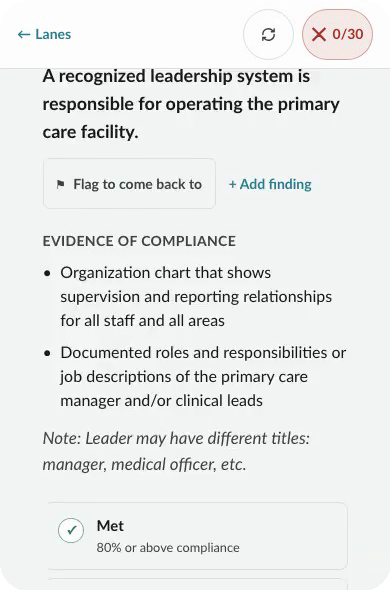
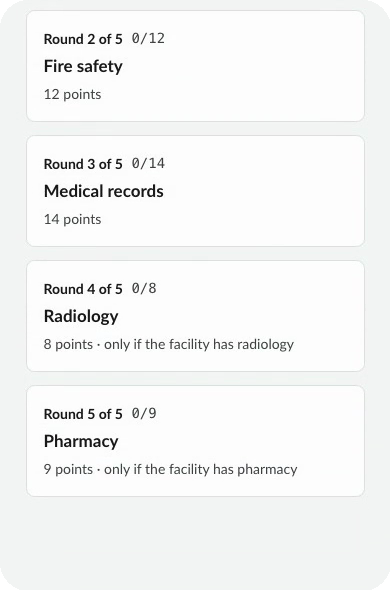
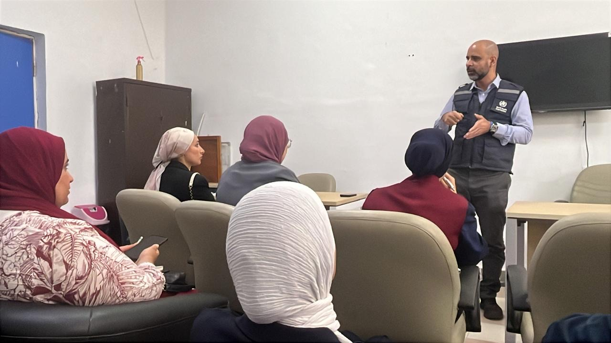
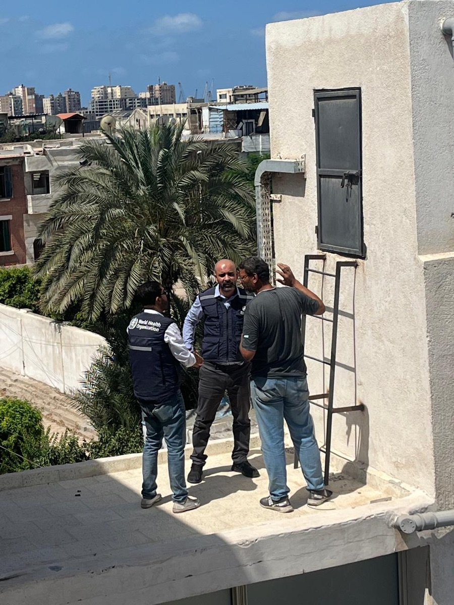
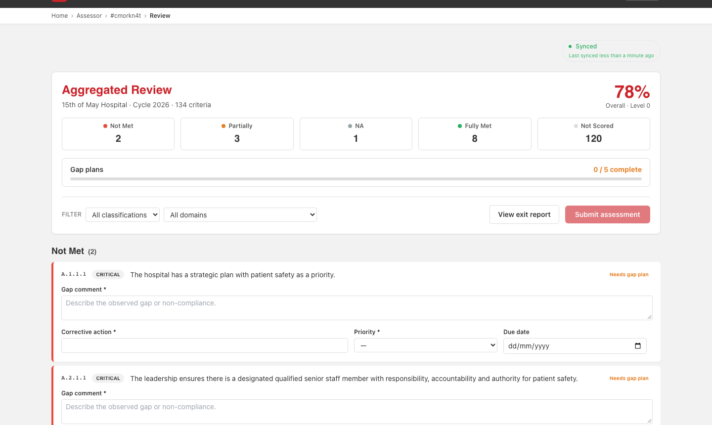

A patient safety assessment has more than a hundred criteria, takes days on site, and wants evidence in every corner of the building. Paper can carry that. It struggles to share a live score, keep evidence with the right criterion, or show how many facilities stand where.
In short
- PSFH (hospitals) and PSFPC (primary care) are my own pilot builds on top of two WHO patient safety frameworks. They are not WHO products.
- They test two ideas: adoption by an institution, and a better day for the assessor on site.
- PSFPC was built in about three weeks by reusing what PSFH had written down. The honest gaps are listed below.
It started with a programme, not an app
The hospital and primary care patient safety programmes were launched with a framework. National trainers were prepared to carry the assessment approach. Mentoring through real implementation showed what was missing: practical tools for the visit itself.

The idea for digital support came out of that work. The tools build on it. They are an experiment in supporting the programme, not a replacement for it and not an endorsed product.
Two tools, two bets
PSFH is for hospitals. It follows the WHO Patient Safety Friendly Hospital Initiative, third edition (2020): five domains, 21 standards, 134 criteria. PSFPC is for primary care. It follows the WHO EMRO Patient Safety Friendly Primary Care Framework, first edition (2022): five domains, 19 standards, 125 criteria.
They also test two different ideas about how adoption happens.
PSFH bets on institutional adoption: a platform a Country Office or national counterpart can adopt to run ongoing assessments, actions and reports across many teams and sites. PSFPC bets on the assessor's experience: mobile screens for the visit itself, built around documents, interviews and walkarounds, working offline.
What I want to learn is which bet earns its place in real settings. That is an open question, and I treat it as one.
PSFH: the assessor's workspace
The PSFH scoring screen has three panes: the criteria tree, the criterion with its evidence of compliance, and a live score. If any critical criterion is not fully met, certification is blocked. Anything short of fully met needs a gap comment before submission, so there are no silent gaps.

Above the single assessment sits the institution's view: hospitals, users and assessments across sites, action plans with deadlines and admin review, and exit reports in PDF, DOCX and XLSX.
PSFPC: built for the visit itself
Primary care visits are shorter, usually one to two days, so the field screens mirror how evidence is actually gathered: three lanes for documents, interviews and walkarounds. The app works offline for up to 48 hours and keeps no patient data on the device. Where teammates rate a criterion differently, a conflict opens, and the lead resolves it with a written reason. Both ratings stay in the record.



The screens are only half of a visit. The rest happens in meeting rooms and on rooftops.


From finding to corrective action
The review is where an assessment becomes useful. Every gap gets a comment, a corrective action, a priority and a due date. Submission is blocked until every criterion is rated, every conflict is resolved and every gap is explained.

After the visit, the facility works through its action plan and gets email reminders before each due date. The next survey is what verifies the result, on a re-survey cycle of 12 to 36 months by level. That interval is a working assumption until WHO EMRO confirms it.
How they were built
The method is plain. Write down what the framework and its users need before any code. Ship in small working slices, each one a product you can demonstrate. Let AI write much of the code, with written rules and human review keeping it right. Test, try it live, record what changed, then plan the next slice.
PSFH came first, from an earlier resilience platform and a detailed requirements document. It proved the approach and left behind a hand-over pack with a step-by-step build order and a list of what to reuse. PSFPC started from PSFH's code. Of 76 planned stories, 12 were lifted as they were, 15 were adapted and 49 were new. Sign-in, offline work and reports came across. The screens were new. The core was built in about three weeks, with far more automated tests: 1,067 recorded passing on 16 September.
Documentation is not overhead. It is what makes the next tool cheaper.
Two rules kept the work honest. The PSFPC scoring tests were written from the manual, not copied from PSFH, because PSFH's own tests had locked in a threshold mismatch. And contested rules, such as level thresholds, are stored as data, so a ruling can change without new code. One of them is still an interim ruling by the programme owner, not WHO EMRO, and I do not present it otherwise.
How they run
Simple by design. Each platform is one web application on one server, with a database and a file store, backed up every night. PSFPC updates itself after the automated checks pass, with one step to undo, and a health page names the exact version that is live. PSFH is still deployed by hand.
What I have not done yet is rehearse a full restore on production. A backup you have never restored is a hope, so that drill is on the list.
Where it stands
Both platforms are in pilot: PSFH in two hospitals and PSFPC in one primary care facility. Results are still to be written up, and organisational rollout is not confirmed. PSFH has far fewer automated tests than PSFPC, its mobile scoring screen needs work, and its self-registration for facilities is built but not yet live. Arabic and French are mostly scaffolding. I would rather say that here than have you find it later.
The code sits in two private repositories with no licence chosen yet. If it is going to scale, it needs an organisation-owned home, a licence, a short guide for contributors, and shared ownership of hosting and support.
What comes next
- Now: pilot in real facilities, confirm thresholds with WHO EMRO, rehearse a full restore.
- Next: full Arabic and French, PSFH scoring on phones, automated updates and deeper tests for PSFH.
- Later: resilience and emergency care checklists, links to hospital information systems, programme views across countries.
These are directions for discussion, not committed releases. The same backbone already serves other standards. The Hospital Safety Index platform was built on it, and the preparedness cycle is the larger thread behind all of it.
Five things I would carry out of the room
- Start from the programme. Tools support work people already trust.
- Slice vertically. Keep a working product at every release.
- Gate the risky bets, and make contested rules data.
- Fork a backbone, and write it for the next team.
- Be honest about what is unproven. Drills and decisions beat confidence.
Where should we focus next?
Which adoption bet fits your setting, institutional or assessor-centred? Who can pilot, review content, or help host and maintain it? Which standard should the backbone serve next? Both tools are listed on the builds page.
Say hello